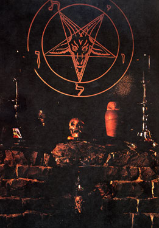

История использования Символа Бафомета в Церкви Сатаны
О символе Бафомета ходит множество слухов и баек, и в этой статье мы откроем истину о том, как Церковь Сатаны использовала этот могущественный образ.
До той поры, пока пресса всего мира не заговорила о Церкви Сатаны — и до публикации "Сатанинской Библии" — так хорошо известный сейчас козел/пентаграмма/"Бафомет" НЕ ИСПОЛЬЗОВАЛСЯ в качестве символа Сатанизма.
Нашим молодым читателям будет трудно в это поверить, но таковы факты.
Взгляните на литературу и атрибутику той поры, когда еще не была основана Церковь Сатаны: Сатанизм обозначается перевернутыми крестами (или распятиями) и богохульными пародиями на кстианское искусство. Кроме того, все "сатанинское" призваны изображать козлы, черти и демоны с их оккультными символами, взятыми из гримуаров. Однако, совершенное графическое изображение, которое мы называем "Символ Бафомета", средства массовой информации и обыватели стали считать основным символом Сатанизма лишь после того, как была основана Церковь Сатаны и этим символом воспользовался д-р ЛаВей. Это не было неожиданностью, так как с самого начала своего существования Церковь Сатаны оказалась в центре внимания газет и телевидения всего мира.
Слово "Бафомет" восходит к записям о суде над Тамплиерами, дискуссии о его происхождении и значении идут и по сию пору. Однако, не имеется никаких весомых доказательств его аналогии с тем СИМВОЛОМ, который мы называем "Бафомет"; ни один факт, опровергающий или подтверждающий это предположение, опубликован не был.
Первая картинка, изображающая козлиную морду в пентаграмме, появилась в посвященной масонству книге Освальда Вирта. Насколько мы знаем, источник этого рисунка не был указан.
Заметьте, что это лишь пентаграмма с козлиной мордой, а не полный "Символ Бафомета", который описан в "Сатаниской Библии", и даже изображение козла и пентаграммы иное. Концепция та же самая, но отображается она по-другому. Звезда не является "правильной" пентаграммой, так как пять "альф", образующие ее углы, не одинаковы. Козлиная морда имеет совершенно особое выражение - отражающее иную индивидуальность, не схожую с той, которая воплощена в "Символе Бафомета".
 Первая версия козломордой пентаграммы, обведенной двумя кругами с надписью "Левиафан" между ними, появилась на обложке книги Мориса Бэсси "Иллюстрированная история магии и сверхъестественного" (Издана на английском в 1964, издана на французском: Histoire en 1000 Images de la Magie, Editions du Pont Royal, 1961).
Первая версия козломордой пентаграммы, обведенной двумя кругами с надписью "Левиафан" между ними, появилась на обложке книги Мориса Бэсси "Иллюстрированная история магии и сверхъестественного" (Издана на английском в 1964, издана на французском: Histoire en 1000 Images de la Magie, Editions du Pont Royal, 1961).
Графическое изображение в книге Бэсси (Англ. издание, страница 198 под заголовком "Сатанинские Науки") имеет подпись, которая гласит: "624-625. Пентаграммы являются результатом тайных нумерологических измышлений. Пятиконечная звезда, к примеру, может являться характеристикой христианской эры, в то время как крест является (среди других) символом пятерки: четыре оконечности и центр. По странному совпадению, и Святой дух, и США, и СССР, и исламиты используют пятиконечную звезду в собственных эмблемах. (Противостояние добра и зла изображается перевернутыми треугольниками)."
Выше приведена иллюстрация, к которой относится эта подпись.
НИГДЕ в этой книге рисунок 625 не называется "Символом Бафомета".
Для лицевой стороны обложки этой книги, изданной в твердом переплете, художник срисовал символ 625, убрал слова "Лилит" и "Самаэль", и рисунок был напечатан белой краской на черном тканевом покрытии. Очень впечатляюще.
В годы исследования Черных Искусств Антон ЛаВей наткнулся на эту книгу и добавил ее в свою библиотеку. Решив превратить свой магический круг, "Орден Трапезоида", в Церковь Сатаны, он решил, что этот своеобразный символ может быть прекрасным отображением принципов, легших в основу первой общедоступной Сатанинской церкви.
 Пентаграмма (пентальфа) пришла из Пифагорейской традиции. Голова козла или овна, вписанная в пентаграмму, изображает Козла Мендеса, символ египетского Нетер Амона, которого именовали "скрытый, что пребывает во всех вещах, суть всех явлений"; таким образом, Нетер наиболее близок к Темной Силе, которая пронизывает и движет всю природу. Два концентрических круга, которые содержат слово "Левиафан", написанное на иврите (с нижнего луча и против часовой стрелки) взято из традиции Офита (змея) Иудеи, и это воплощение Дракона Бездны, иногда изображаемого символом "ouroboros" (змей, кусающий свой хвост, образует круг). Итак, в одном символе мы находим слияние принадлежащих нескольким культурам воплощений того, что мы называем Сатаной. Именно этот рисунок с обложки был увеличен и помещен над алтарем в ритуальном зале известного Черного Дома.
Пентаграмма (пентальфа) пришла из Пифагорейской традиции. Голова козла или овна, вписанная в пентаграмму, изображает Козла Мендеса, символ египетского Нетер Амона, которого именовали "скрытый, что пребывает во всех вещах, суть всех явлений"; таким образом, Нетер наиболее близок к Темной Силе, которая пронизывает и движет всю природу. Два концентрических круга, которые содержат слово "Левиафан", написанное на иврите (с нижнего луча и против часовой стрелки) взято из традиции Офита (змея) Иудеи, и это воплощение Дракона Бездны, иногда изображаемого символом "ouroboros" (змей, кусающий свой хвост, образует круг). Итак, в одном символе мы находим слияние принадлежащих нескольким культурам воплощений того, что мы называем Сатаной. Именно этот рисунок с обложки был увеличен и помещен над алтарем в ритуальном зале известного Черного Дома.
Тот факт, что первоисточником этого символа была книга Мориса Бэсси, не был секретом для наших членов, которые участвовали в ритуалах в Черном Доме на заре становления Церкви. Они постоянно листали книгу, и часто с нею фотографировались (снимая пылезащитный чехол, на котором символа не было).
В свои ранние годы Церковь Сатаны использовала версию с обложки этой книги на членских карточках и официальных бумагах, а также на медальонах, которые изготовлялись и заводским образом, и вручную. Конечно, было множество вариантов, которые появлялись в зависимости от умений тех, кто их делал, и от сложности задуманных деталей.
Пока писалась "Сатанинская Библия", было решено, что нужно создать особую версию этого символа, который отныне ассоциировался бы только с Церковью Сатаны. Пентаграмму сделали геометрически правильной, в два совершенных круга вписали еврейские буквы, которые были искажены с целью придать им вид некой змеиной резкости и "древности", а морда козла была тщательно прорисована заново, особое же внимание уделялось выражению его глаз. Первоначально детализированный оригинал использовался при создании алтарных плит, которыми могли пользоваться только местные члены Церкви Сатаны (позже, в феврале 1970, они стали доступны всем членам).
Потом эта новая версия появилась на конверте скандальной пластинки "Сатанинская Месса" (1968), выпущенной Церковью Сатаны. В придачу к записи Сатанинской Мессы, пластинка содержала Пролог и 1-5 части "Книги Сатаны" из не изданной еще "Сатанинской Библии". Дизайн конверта был подписан "Хьюго Зорилла", псевдонимом Антона ЛаВея, который он использовал в некоторых своих работах. Примечание, приписанное Франклину Кинкэду, гласило, что "Сатанинский символ, Бафомет", был заимствован у тамплиеров.
 Этот символ наконец-то стал доступен публике в декабре 1969 года с изданием "Сатанинской Библии", где он был помещен на обложке и на первой странице раздела, описывающего Сатанинский Ритуал. Следует отметить, что в этой книге первый раз для всей доступной массам литературы он был назван "знаком Бафомета". Эта версия впоследствии была использована Церковью Сатаны при создании личных медальонов (которыми могли обладать только члены Церкви), и стала стандартным логотипом для всех материалов Церкви Сатаны. Мы начали называть его в более величественной манере - "Символ Бафомета", или "Печать Бафомета", и таким же образом он был назван в книге "Сатанинские Ритуалы" (вышедшей в декабре 1972). Нужно отметить, что эта версия рисунка защищена авторским правом, которое принадлежит исключительно Церкви Сатаны. Мы имеем полное право помещать после рисунка знак ©, если нам вздумается так сделать.
Этот символ наконец-то стал доступен публике в декабре 1969 года с изданием "Сатанинской Библии", где он был помещен на обложке и на первой странице раздела, описывающего Сатанинский Ритуал. Следует отметить, что в этой книге первый раз для всей доступной массам литературы он был назван "знаком Бафомета". Эта версия впоследствии была использована Церковью Сатаны при создании личных медальонов (которыми могли обладать только члены Церкви), и стала стандартным логотипом для всех материалов Церкви Сатаны. Мы начали называть его в более величественной манере - "Символ Бафомета", или "Печать Бафомета", и таким же образом он был назван в книге "Сатанинские Ритуалы" (вышедшей в декабре 1972). Нужно отметить, что эта версия рисунка защищена авторским правом, которое принадлежит исключительно Церкви Сатаны. Мы имеем полное право помещать после рисунка знак ©, если нам вздумается так сделать.
 Церковь Сатаны подала заявку (1981) и затем получила (1983) торговую марку, которая ограничивает использование Символа Бафомета со словами "Церковь Сатаны". Таким образом, Церковь Сатаны имеет законное право помещать знак ®, обозначающий "торговую марку", рядом с комбинацией символа и слов. Эта торговая марка, кроме того, запрещает кому бы то ни было пользоваться похожим название и символикой, которые могут повредить торговой марке.
Антон ЛаВей уполномочил "Hell's Kitchen Productions, Inc." разработать медальон с Символом Бафомета, в котором предусматривались небольшие изменения - еврейские буквы между кругами были не контурированными, а заполненными краской. Эта официальная версия используется и на веб-сайте Церкви, вы можете увидеть ее над заглавиями некоторых статей. Как и оригинал, этот рисунок защищен законом об авторских правах.
Копирайт на изображение, помещенное на обложке книги Бэсси, принадлежал издателю этой книги. Так как книга больше не переиздается, срок авторского права истек, следовательно, права на текст возвращаются его автору, а права на графику нужно определить - как правило, их возвращают художнику. По прошествии достаточного времени, если автор не обновил свой копирайт, произведение становится собственностью государства. Таким образом, рисунки из книги Бэсси ( и внутри, и снаружи) теперь являются государственной собственностью.
Источник, из которого Бэсси позаимствовал изображенный в книге символ, пока не определен (впрочем, как и источник того рисунка, который приводится у Вирта). Если подобная информация будет обнаружена, мы с радостью ее опубликуем (исследователи, вам на заметку!).
Магистр Питер Х. Гилмор
Walpurgisnacht, XXXV A.S.
Ниже — подборка найденных нами вариантов "Бафомета"
Ни один из них не принадлежит Церкви Сатаны, но авторское право на эти рисунки может принадлежать каким-то художникам.
 |
 |
|
| Обложка альбома: JAMRA: The Second Coming (1972) |
Обложка альбома: VENOM: Welcome To Hell (1982) |
Автор неизвестен |
| Элемент оформления обложки серии книг по оккультизму, изданных в Aldus Books Ltd., 1976. Чудесный образец ненавязчивого плагиата. |
||
Перевод © Schakal, XXXVI
Я немного сократил статью, выбросив из ее заключительной части нудные рассуждения о копирайте - впрочем, американцам это простительно, особенно если учесть, что на славе Церкви, как блохи, расплодились жулики и кошкодавы. Кроме того, мне показалось уместным дополнить перевод цитатой, касающейся если не реального изображения Бафомета, то представления о нем в рамках толкования XV аркана Таро.
"Слово Baphomet, прочитанное справа налево Temohpab, будет нотариконом следующей формулы: Templi omnium hominum pacis abbas, что в переводе с латинского значит: 'настоятель храма мира всех людей'.

Этим словом Тамплиеры называли индивидуализированный астральный Tourbillion, действительно, при умелом управлении им, могущий повести людей по пути умиротворения и самоусовершенствования. [...]
Чтобы законченнее отобразить астрального бога в вашем воображении, я считаю нелишним привести его характеристику из текста Изумрудной Скрижали:
[...] отец его Солнце, мать его - Луна; Ветер выносил его в чреве своем; Земля его кормилица.
В нем источник всякой Целесообразности во вселенной.
Его сила исчерпана полностью, если она обращена в землю.
Ты отделишь землю от огня, тонкое от плотного, плавно, с великим умением.
Он восходит от земли к небу и снова возвращается в землю, заряжаясь силой высших и низших начал.
А комментируется следующим образом:
Он (Бафомет) рождается, согласно Великому гностическому закону, от некоторого активного Iod и некоторого пассивного He, строго соответствующего упомянутому Iod; вампиризирует он мировую Среду и опорной точкой берет наигустейшие коагуляты.
Волютивные сущности, порожденные какими бы то ни было индивидуумами Вселенной, целиком сотканы из него. Реальнее всего он оперирует, когда покрыт оболочкой физических коагулятов.
Ты отдаешь себе строго отчет в том, какие элементы считать активными и какие - пассивными в каждой операции.
Он (Бафомет) определяется двойным вихрем, восходящая часть которого берет силу в опорной точке коагулятов, а нисходящая - в точке ее привеса к высшим метафизическим началам."
("Курс энциклопедии оккультизма", Киев, 1994, по лекциям Г.О. Мебеса 1911-1912 г.г.)